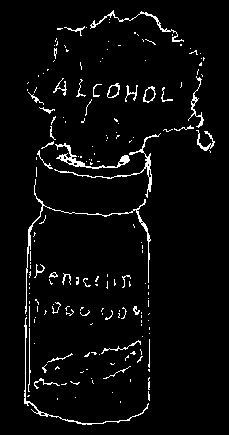


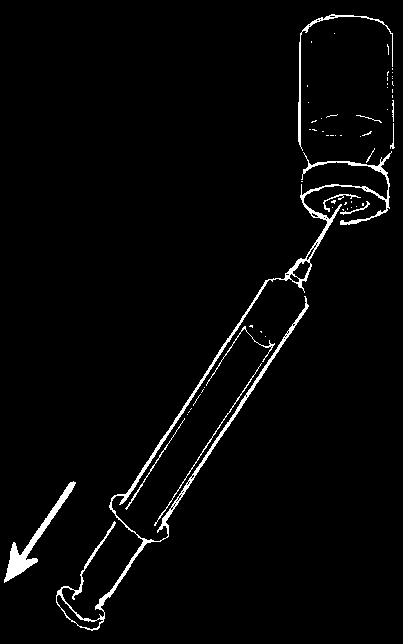
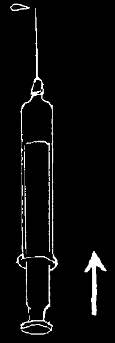
HOW TO PREPARE A SYRINGE FOR INJECTION
Before preparing a syringe, wash hands with soap and water.
1. Take the syringe apart
2. Pour out the boiled and boil it and the water without touching needle for 20 minutes.
the syringe or the needle.
3. Put the needle and the syringe
4. Clean the ampule of distilled together, touching only the base of the water well, then break off the top.
needle and the button of the plunger.
5. Fill the syringe.
6. Rub the rubber of the
7. Inject
(Be careful that bottle with clean cloth the distilled the needle does wet with alcohol or boiled water into the not touch the water.
bottle with outside of the the powdered ampule.)
medicine.
8. Shake until the
9. Fill the syringe
10. Remove all air medicine dissolves.
again.
from the syringe.
Be very careful not to touch the needle with anything—not even the cotton with alcohol. If by chance the needle touches your finger or something else, boil it again.

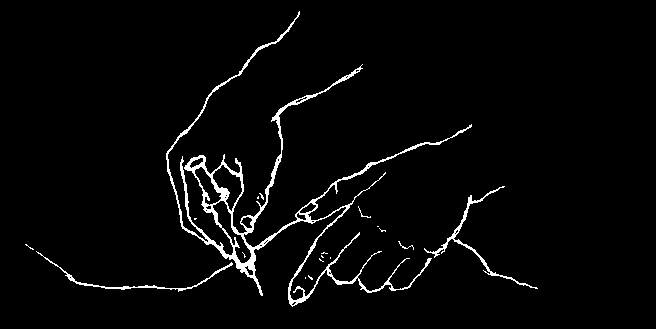


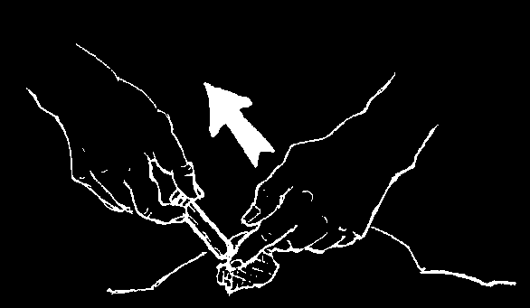
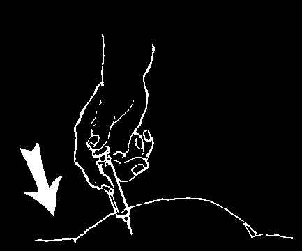
WHERE TO GIVE AN INJECTION
Before injecting, wash hands with soap and water.
It is preferable to inject in the muscle of the buttocks, always in the upper outer quarter.
WARNING: Do not inject into an area of skin that is infected or has a rash.
Do not inject infants and small children in the buttock. Inject them in the upper outer part of the thigh.
HOW TO INJECT
1. Clean the skin with soap and water
2. Put the needle straight in, all the
(or alcohol—but to prevent severe way. (If it is done with one quick pain, be sure the alcohol is dry before movement, it hurts less.)
injecting).
3. Before injecting, pull back
4. If no blood enters,
5. Remove the needle on the plunger. (If blood inject the medicine and clean the skin enters the syringe, take slowly.
again.
the needle out and put it in somewhere else).
6. After injecting, rinse the syringe and needle at once. Squirt water through the needle and then take the syringe apart and wash it. Boil before using again.
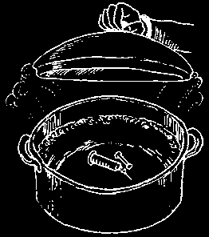

HOW INJECTIONS CAN DISABLE CHILDREN
When used correctly, certain injected medicines, such as vaccinations, are important to protect a child’s health and prevent disability. But if injections are given with needles or syringes that are not sterilized, the injections may cause a serious infection. Unclean needles and syringes can spread germs that cause HIV or other serious diseases, such as hepatitis, from one person to another. Dirty needles and syringes can also cause infections that lead to paralysis or death. Never inject more than 1 person with the same needle or syringe without disinfecting it first.
Some injected medicines can cause dangerous allergic reactions, poisoning, deafness, or other harmful effects. For example, pregnant women are often given hormone injections to speed up childbirth and 'give strength’—but these injections are dangerous for the mother and can cause brain damage or death of the baby.
For more information on how injections disable children, see Disabled Village
Children, Chapter 3.
For ideas on teaching people about the danger of unnecessary injections, see
Helping Health Workers Learn, Chapters 18, 19, and 27.
HOW TO CLEAN (STERILIZE) EQUIPMENT
Many infectious diseases, such as HIV (see p. 399), hepatitis (see p. 172), and tetanus (see p. 182), can spread from a sick person to a healthy person through the use of syringes, needles, and other instruments that are not sterile (this includes the instruments used for piercing ears, acupuncture, tattoos, or circumcision). Many skin infections and abscesses also start because of this. Any time the skin is cut or pierced, it should be done only with equipment that has been sterilized.
Here are some ways to sterilize equipment:
• Boil for 30 minutes. (If you do not have a clock, add 1 or 2 grains of rice to the water. When the rice is cooked, the equipment will be sterile.)
• Or use pressure steaming for 30 minutes in a pressure cooker (or an autoclave).
• Or soak for 20 minutes in a solution of 1 part chlorine bleach to 7 parts water, or in a solution of 70% ethanol alcohol. If possible, prepare these solutions fresh each day, because they lose their strength. (Be sure to sterilize the inside of a syringe by pulling some solution inside and then squirting it out.)
When you are helping someone who has an infectious disease, wash your hands often with soap and water.


CHAPTER
First Aid
BASIC CLEANLINESS AND PROTECTION
When a person is hurt, the most important thing is to help. But you also must protect yourself from HIV and other blood-borne diseases. When someone is bleeding:
1. If possible, show the injured person how to stop the bleeding themselves, by applying direct pressure on the wound.
2. If they cannot do this, keep the blood off yourself by wearing gloves or a clean plastic bag on your hands, and placing a clean, thick cloth directly over the wound before applying pressure.
Avoid objects soiled with blood. Be careful not to prick yourself with needles or other sharp objects around the person you are helping. Cover cuts or other wounds with dry, clean bandages to protect them.
Be especially careful when you have to provide first aid where there are many people wounded from an accident or fighting.
If you do get blood or other body fluids on you, wash your hands with soap and water as soon as possible. If other parts of your body were touched by body fluids
(especially your eyes), wash them thoroughly with lots of water.
FEVER
When a person’s body temperature is too hot, he has a fever. Fever is not a sickness,
YES but a sign of many different sicknesses. A high fever (over 39°C or over 102°F) can be a sign of a dangerous problem, especially in a small child.
When a person has a fever:
1. Uncover him completely. Small children should be undressed completely and left
This helps the fever go down.
naked until the fever goes down.
NO
Never wrap the child in clothing or blankets.
To wrap up a child with fever is dangerous.
Fresh air or a breeze will not harm a person with fever. On the contrary, a fresh breeze helps lower the fever.
This makes the fever go up.
2. Also take aspirin to lower fever (see p. 378).
For children, it is safer to give acetaminophen
(paracetamol, p. 380). Be careful not to give too much.
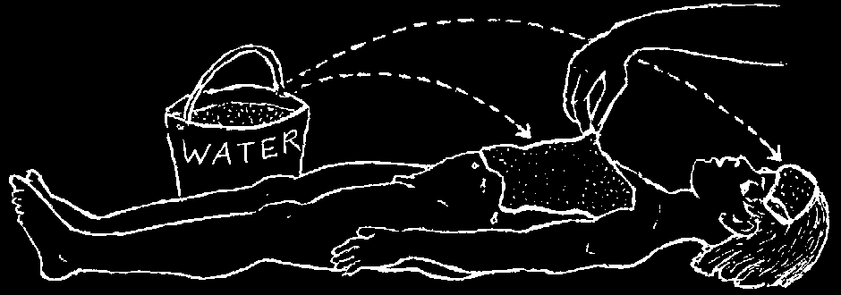
3. Anyone who has a fever should drink lots of water, juices, or other liquids. For small children, especially babies, drinking water should be boiled first (and then cooled).
Make sure the child passes urine regularly. If she does not pass much urine, or the urine is dark, give a lot more water.
4. When possible, find and treat the cause of the fever.
Very High Fevers
A very high fever can be a sign of a dangerous illness. Bring the fever down as soon as you can and treat the cause of the fever, if possible. High fever can cause seizures
(convulsions) and is most dangerous for small children.
When a fever goes very high (over 40°), it must be lowered at once:
1. Put the person in a cool place.
2. Remove all clothing.
3. Fan him.
4. Pour water over him, or put cloths soaked in cool water on his chest and forehead.
Fan the cloths and change them often to keep them cool. Continue to do this until the fever goes down (below 38°).
5. Give him plenty of cool (not cold) water to drink.
6. Give a medicine to bring down fever. Aspirin or acetaminophen works well, but for children under 12 years old it is safer to use acetaminophen.
Dosage for acetaminophen (using 300 mg. adult tablets):
Persons over 12 years: 2 tablets every 4 hours
Children 6 to 12 years: 1 tablet every 4 hours
Children 3 to 6 years: 1/2 tablet every 4 hours
Children under 3 years: 1/4 tablet every 4 hours
If a person with fever cannot swallow the tablets, grind them up, mix the powder with some water, and put it up the anus as an enema or with a syringe without the needle.
If a high fever does not go down soon, if the person is unconscious, or if seizures (fits, convulsions) begin, continue cooling with water and seek medical help at once.

SHOCK
Shock is a life threatening condition that can result from a large burn, losing a lot of blood, severe illnesses, dehydration, or severe allergic reaction. Heavy bleeding inside the body—although not seen—can also cause shock.
Signs of SHOCK:
• weak, rapid pulse (more than 100 per minute for an adult, more than 140 per minute for a child over 2 years old, and more than 190 per minute for a baby)
• 'cold sweat’; pale, cold, damp skin
• blood pressure drops dangerously low
• mental confusion, weakness, or loss of consciousness.
What to do to prevent or treat shock:
At the first sign of shock, or if there is risk of shock...
♦ Loosen any belts or tight clothing the person may be wearing.
♦ Have the person lie down with his feet a little higher than his head, like this:
However, if he has a severe head injury, put him in a 'half sitting’ position (p. 91).
♦ Stop any bleeding. Use gloves or a plastic bag to keep the blood off your hands.
♦ If the person feels cold, cover him with a blanket.
♦ If he is conscious and able to drink, give him sips of water or other drinks. If he looks dehydrated, give a lot of liquid, and Rehydration Drink (p. 152). If he does not respond quickly, give intravenous fluids if you know how.
♦ Treat his wounds, if he has any.
♦ If he is in pain, give him aspirin or another pain medicine—but not one with a sedative such as codeine.
♦ Keep calm, reassure the person, and seek medical help.
If the person is unconscious:
♦ Lay him on his side with his head low.
♦ If he has vomited, clear his mouth immediately. Be sure his head is low, tilted back, and to one side (see above) so he does not breathe vomit into his lungs.
If he has a neck or spine injury, do not tilt his head or move his back.
♦ Do no give him anything by mouth until he becomes conscious.
♦ If you or someone nearby knows how, give intravenous solution (normal saline)
at a fast drip.
♦ Seek medical help fast.


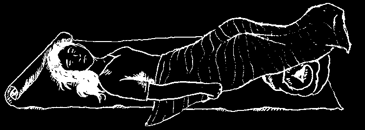
LOSS OF CONSCIOUSNESS
Common causes of loss of consciousness are:
• drunkenness
• a hit on the head
• fainting (from fright, weakness,
(getting knocked out)
low blood sugar, etc.)
• shock (p. 77)
• heat stroke (p. 81)
• seizures (p. 178)
• stroke (p. 327)
• poisoning (p. 103)
• heart attack (p. 325)
If a person is unconscious and you do not know why, immediately check each of the following:
1. Is he breathing well? If not, tilt his head way back and pull the jaw and tongue forward. If something is stuck in his throat, pull it out. If he is not breathing, use mouth-to-mouth breathing at once (see p. 80).
2. Is he losing a lot of blood? If so, control the bleeding (see p. 82).
3. Is he in shock (moist, pale skin; weak, rapid pulse)? If so, lay him with his head lower than his feet and loosen his clothing (see p. 77).
4. Could it be heat stroke (no sweat, high fever, hot, red skin)? If so, shade him from the sun, keep his head higher than his feet, and soak him with cold water (ice water if possible) and fan him (see p. 81).
How to position an unconscious person:
very pale skin:
red or normal skin:
(shock, fainting, etc.)
(heat stroke, stroke, heart problems, head injury)
If there is any chance that the unconscious person is badly injured:
It is best not to move him until he becomes conscious. If you have to move him, do so with great care, because if his neck or back is broken, any change of position may cause greater injury (see p. 100).
Look for wounds or broken bones, but move the person as little as possible. Do not bend his back or neck.
Never give anything by mouth to a person who is unconscious.
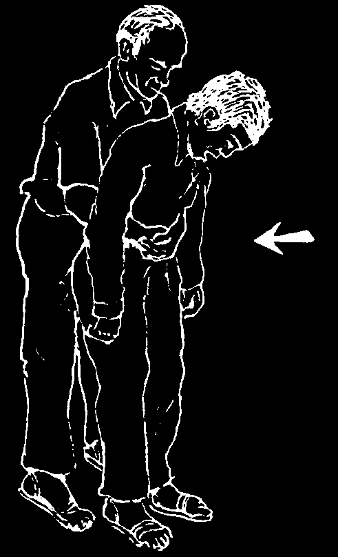

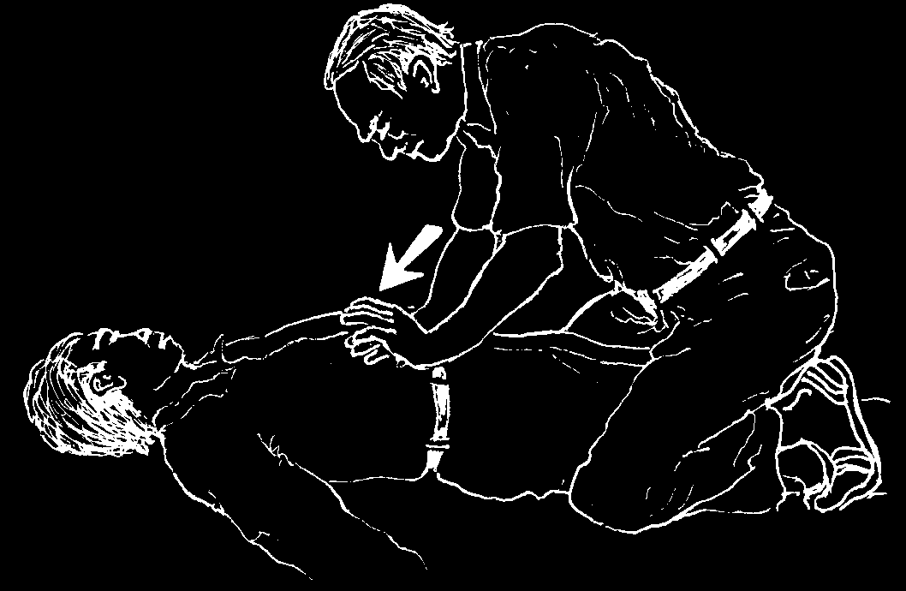

WHEN SOMETHING GETS STUCK IN THE THROAT
When food or something else sticks in a person’s throat and he cannot breathe, quickly do this:
♦ Bend him over at the waist.
♦ Use the palm of your hand to give 5 firm blows on the middle of the back.
If this does not work:
♦ Stand behind him and wrap your arms around his waist.
♦ Put your fist against his belly above the navel and below the ribs.
♦ Press into his belly with a sudden strong upward jerk.
This forces the air from his lungs and should free his throat. Repeat several times if necessary.
(For fat persons, pregnant women, persons in wheelchairs, or small children, place hands on the chest, not the belly.)
If the person is a lot bigger than you, or is already unconscious, lay him on his back, tilt his head to one side, and sit over him like this, with the heel of your lower hand on his belly between his navel and ribs. Make a quick, strong upward push.
Repeat several times if necessary. If he still cannot breathe, try mouth-tomouth breathing (see next page).
DROWNING
A person who has stopped breathing has only 4 minutes to live! Act fast!
Start mouth-to-mouth breathing at once
(see next page)—if possible, even before the drowning person is out of the water, as soon as it is shallow enough to stand.
ALWAYS START MOUTH-TO-MOUTH
BREATHING AT ONCE.


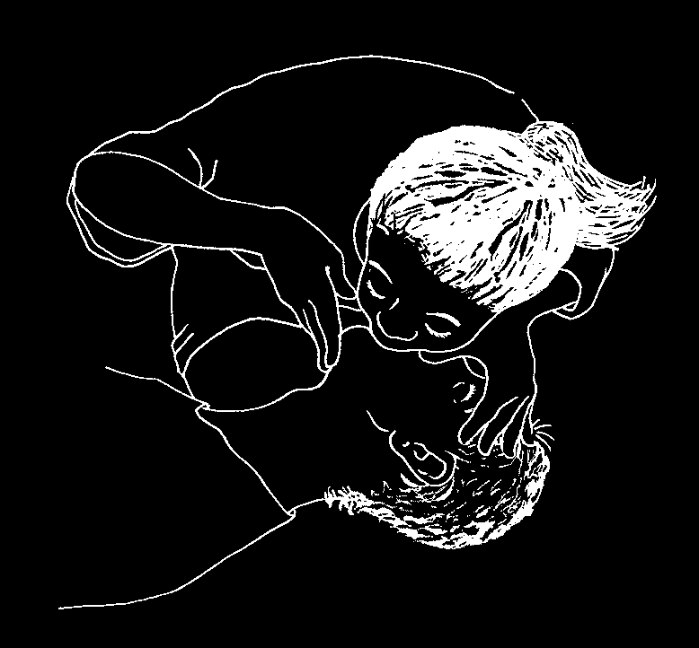
WHAT TO DO WHEN BREATHING STOPS: MOUTH-TO-MOUTH BREATHING
Common causes for breathing to stop are:
• something stuck in the throat
• the tongue or thick mucus blocking the throat of an unconscious person
• drowning, choking on smoke, or poisoning
• a strong blow to the head or chest
• a heart attack
A person can die within 4 minutes if he does not breathe.
If a person stops breathing, begin mouth-to-mouth breathing IMMEDIATELY.
Do all of the following as quickly as you can:
Step 1: Quickly use a finger to remove anything stuck in the mouth or throat.
Step 2: Quickly but gently lay the person face up. Gently tilt his head back, and pull his jaw forward.
Step 3: Pinch his nostrils closed with your fingers, open his mouth wide, cover his mouth with yours, and blow strongly into his lungs so that his chest rises. Pause to let the air come back out and blow again. Repeat about once every 5 seconds. With babies and small children, cover the nose and mouth with your mouth and breathe very gently about once every 3 seconds.
Continue mouth-to-mouth breathing until the person can breathe by himself, or until there is no doubt he is dead. Sometimes you must keep trying for an hour or more.
Note: Unless there is an open sore or bleeding in the mouth, it is not possible to give or get hepatitis or HIV from mouth-to-mouth breathing.
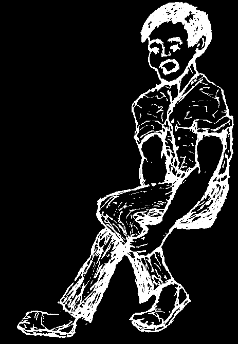

EMERGENCIES CAUSED BY HEAT
Heat Cramps
In hot weather people who work hard and sweat a lot sometimes get painful cramps in their legs, arms, or stomach. These occur because the body lacks salt.
Treatment: Put a teaspoon of salt in a liter of boiled water and drink it. Repeat once every hour until the cramps are gone. Have the person sit or lie down in a cool place and gently massage the painful areas.
Heat Exhaustion
Signs: A person who works and sweats a lot in hot weather may become very pale, weak, and nauseous, and perhaps feel faint. The skin is cool and moist. The pulse is rapid and weak. The temperature of the body may rise but is usually normal
(see p. 31).
Treatment: Have the person lie down in a cool place, raise his feet, and rub his legs. Give salt water to drink: 1/2 teaspoon of salt in a liter of water. (Give nothing by mouth while the person is unconscious.)
Heat Stroke
Heat stroke is not common, but is very dangerous. It occurs especially in older people, very fat people, and alcoholics during hot weather.
Signs: The skin is red, very hot, and dry. Not even the armpits are moist. The person has a very high fever, sometimes more than 42°C, and a rapid heartbeat.
Often he is unconscious.
Treatment: The body temperature must be lowered immediately. Put the person in the shade. Soak him with cold water (ice water if possible) and fan him.
Continue until the fever drops. Seek medical help.
DIFFERENCES BETWEEN 'HEAT EXHAUSTION’ AND 'HEAT STROKE’:
HEAT EXHAUSTION
HEAT STROKE
• sweaty, pale, cool skin
• dry, red, hot skin
• large pupils
• high fever
• weakness
• the person is very ill or unconscious
For emergencies caused by cold, see p. 408 and 409.

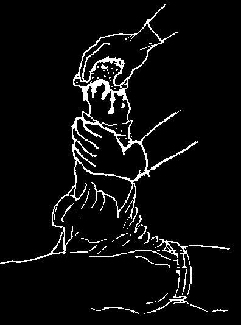
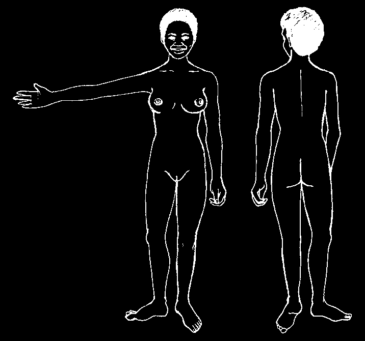
HOW TO CONTROL BLEEDING FROM A WOUND
1. Raise the
2. With a clean thick cloth (or your hand if there is no injured part.
cloth) press directly on the wound. Keep pressing until the bleeding stops. This may take 20 minutes or sometimes an hour or more. This type of direct pressure will stop the bleeding of nearly all wounds—sometimes even when a part of the body has been cut off.
Occasionally direct pressure will not control bleeding, especially when the wound is very large or an arm or leg has been cut off. If this happens:
♦ Keep pressing on the wound.
PRESSURE points
♦ Keep the wounded part as high as possible.
♦ You can maintain pressure by binding the wound tightly with a bandage or a piece of clean clothing.
♦ Squeeze at pressure points on the artery that brings blood to that part of the body. Pressure points are where, using the flat part of your fingers, you can push the artery against a bone to shut off or slow down the flow of blood.
♦
Keep pressing for 20 minutes before looking to see if the bleeding has stopped. Keep pressing with your other hand on the wound itself. Applying pressure is hard work—do not give up!
PRECAUTIONS:
• Using a tourniquet to stop the bleeding usually results in total loss of the arm or leg. Only use a tourniquet if you have no other option. Never use a string or wire.
It can cut right through the skin.
• Never use dirt, kerosene, lime, or coffee to stop bleeding.
• When bleeding or injury is severe, raise the feet and lower the head to prevent shock (see p. 77).
• Keep blood from getting into any cuts or sores on your skin (see p. 75).
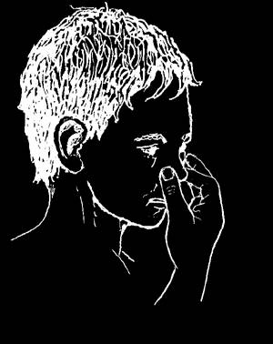

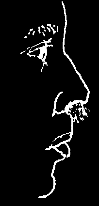

HOW TO STOP NOSEBLEEDS
1. Sit quietly and upright.
2. Blow the nose gently to remove mucus and blood.
3. Have the person pinch the nose firmly for 10 minutes or until the bleeding has stopped.
If this does not control the bleeding...
Pack the nostril with a wad of cotton, leaving part of it outside the nose. If possible, first wet the cotton with Vaseline or lidocaine with epinephrine (p. 379).
Then pinch the nose firmly again. Do not let go for 10 minutes or more.
Do not tip the head back.
Leave the cotton in place for a few hours after the bleeding stops; then take it out very carefully.
In older persons especially, bleeding may come from the back part of the nose and cannot be stopped by pinching it. In this case, have the person hold a cork, corn cob, or other similar object between his teeth and, leaning forward, sit quietly and try not to swallow until the bleeding stops. (The cork helps keep him from swallowing, and that gives the blood a chance to clot.)
Prevention:
If a person’s nose bleeds often, smear a little Vaseline inside the nostrils twice a day. Or sniff water with a little salt in it
(see p. 164).
Eating oranges, tomatoes, and other fruits may help to strengthen the veins so that the nose bleeds less.
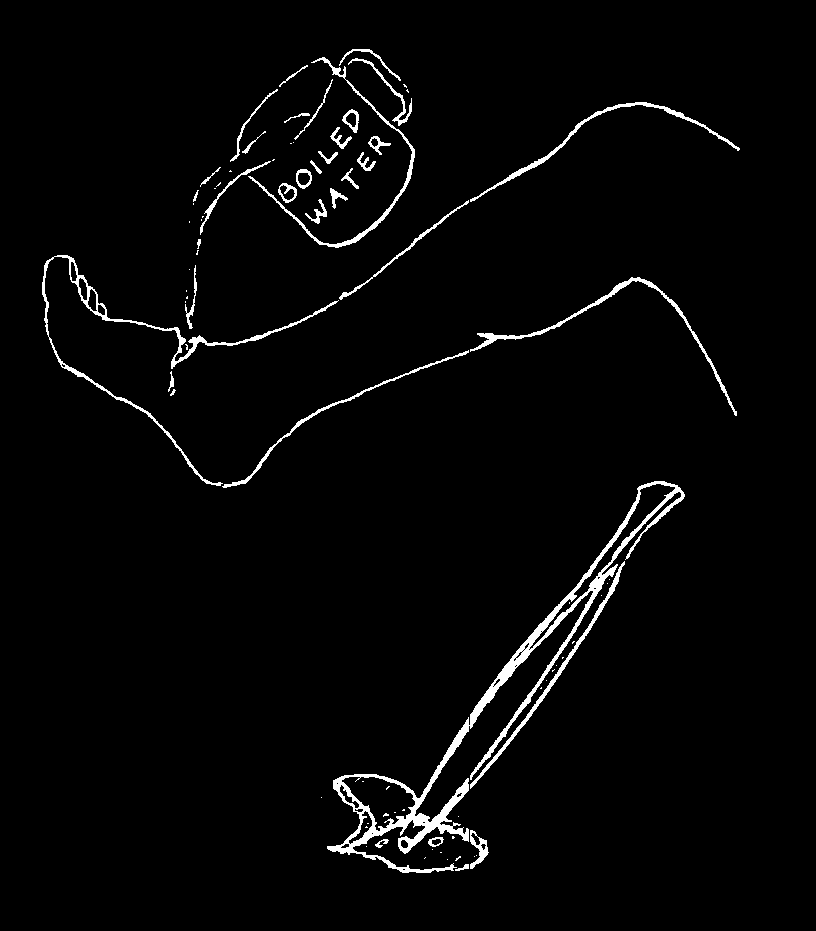